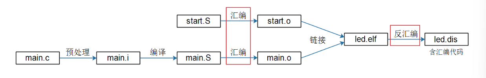
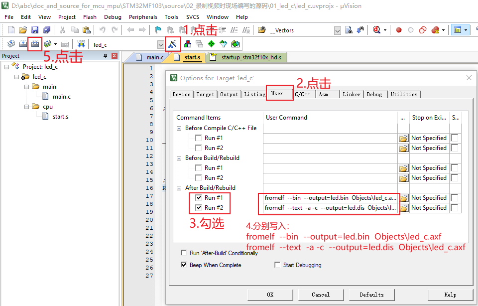
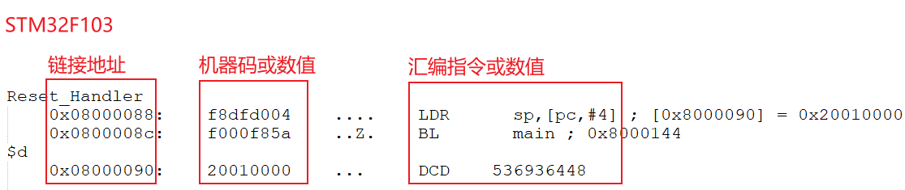

| 创建时间： | 2022/1/12 14:19 |
| 更新时间： | 2022/1/12 14:26 |
| 作者： | gi51wa2j |
| 标签： | bingo, 汇编, 细节知识 |
我们的第1个LED程序涉及2个文件：start.S、main.c，它们的处理过程如下：
我们想深入理解ARM架构，想深入理解汇编与C，想深入理解栈的作用，想深入理解C语言的实质， 就必须把最终的可执行程序，反汇编后，阅读得到的汇编代码。
上述4个步骤的细节，在后面课程里再讲。
现在只需要理解“汇编”、“反汇编”的概念：
汇编 汇编文件转换为目标文件(里面是机器码)。
反汇编 可执行文件(目标文件，里面是机器码)，转换为汇编文件。
在KEIL的User选项中，如下图添加这两项：
然后重新编译，即可得到二进制文件led.bin(以后会分析)、反汇编文件led.dis。 如下图操作：
使用GCC工具链编译程序时，在Makefile中有这一句：
它就是把可执行程序led.elf，反汇编，得到led.dis。
参考资料：
doc_and_source_for_mcu_mpu\通用资料\ARM:
DDI0403E_B_armv7m_arm.pdf P254 // cortex M3/M4
ARM ArchitectureReference Manual ARMv7-A and ARMv7-R edition.pdf P410 // cortex A7
前面介绍过伪指令，伪指令是实际不存在的ARM命令，编译器在编译时转换成存在的ARM指令。
我们代码中的ldr r1, =0x????????这条伪指令的真实指令是什么呢?
对于我们使用的3款板子，汇编代码如下(如果你的板子不是这3款之一，请灵活变通，知识是一样的)：
我们可以通过反汇编来查看, 只摘取前面一小段。
我们只摘取前面一小段，第一列是地址，第二列是机器码，第三列是汇编：
为什么 PC=当前指令+4或8？
CORTEX M3/M4 使用Thumb2指令集，一条指令是16位或32位。
CORTEX A7
默认使用ARM指令集，一条指令是32位的。
流水线
ARM指令采用流水线机制：
当前执行地址A的指令，
同时已经在对下一条指令进行译码
同时已经在读取下下一条指令：PC = A +4 (Thumb/Thumb2指令集)、PC = A + 8 (ARM指令集)
C 为了方便人类方便使用，发明的高级语言，要转换为汇编。
汇编 为了解放人类的记忆，发明的“助记符”，不用去记各类机器码。
最终要转换为机器码。
机器码
给CPU使用